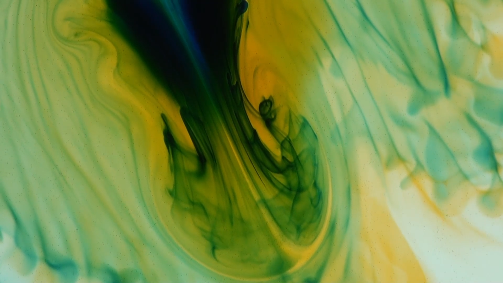
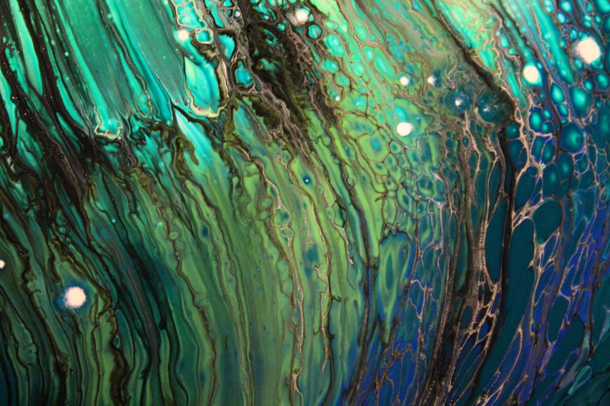
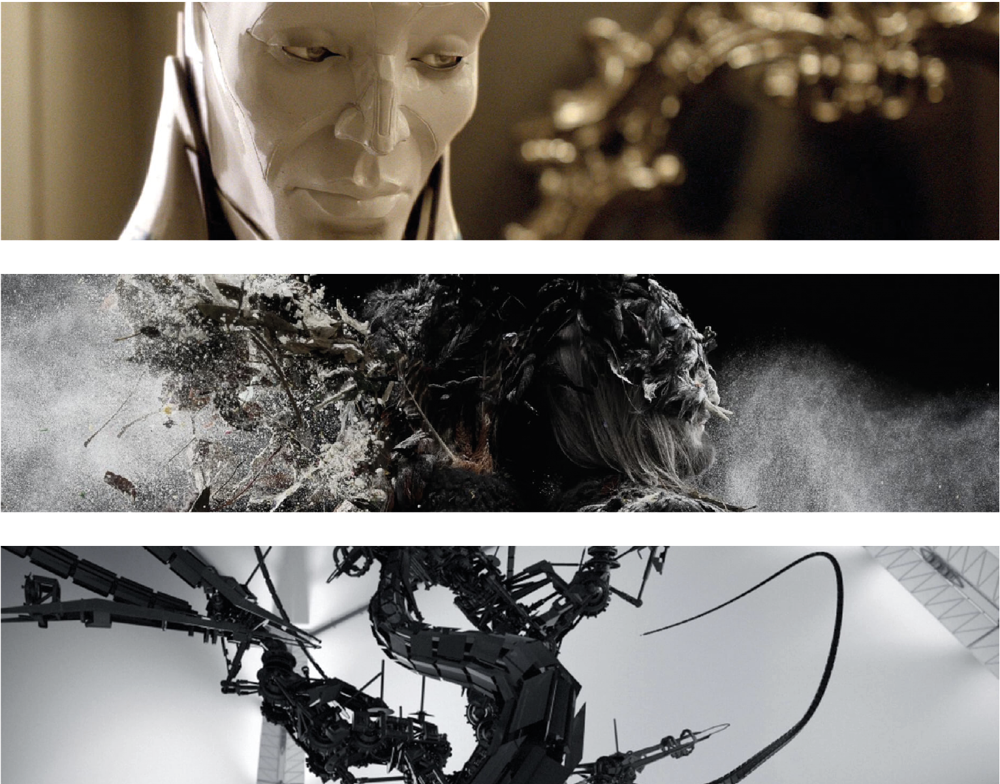
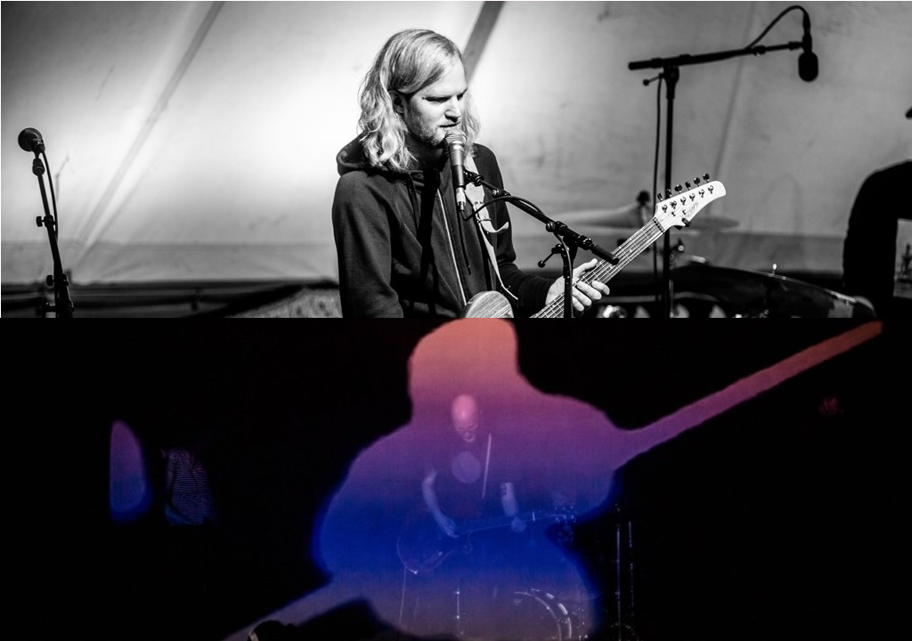
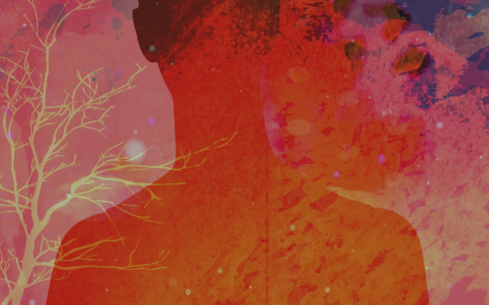
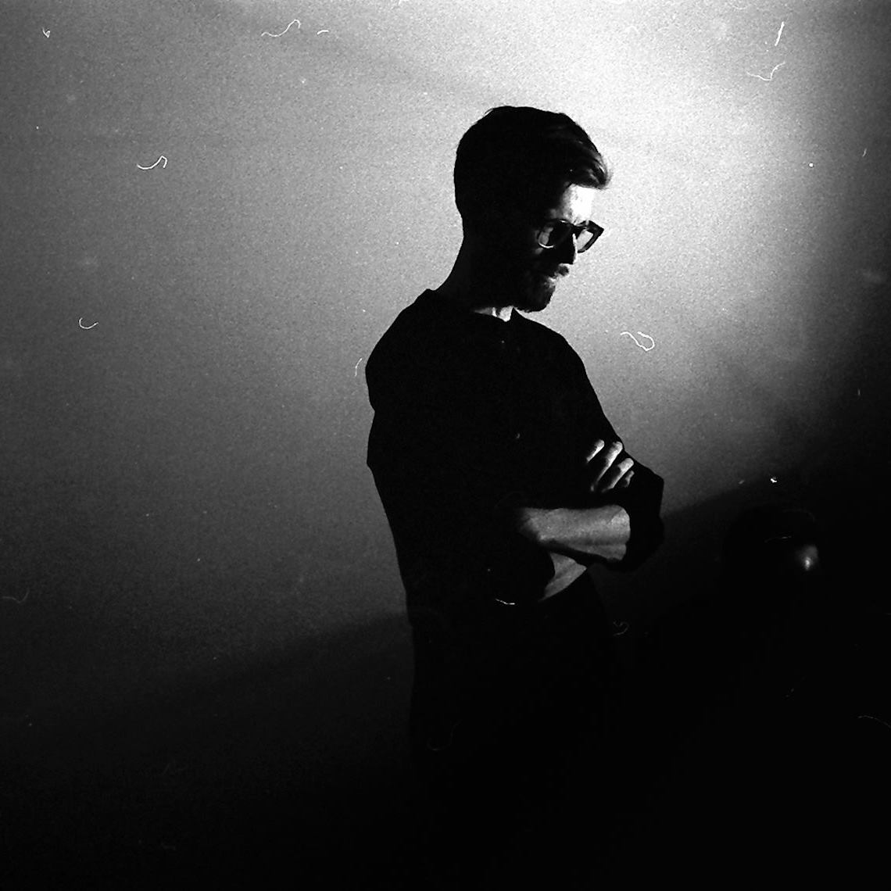
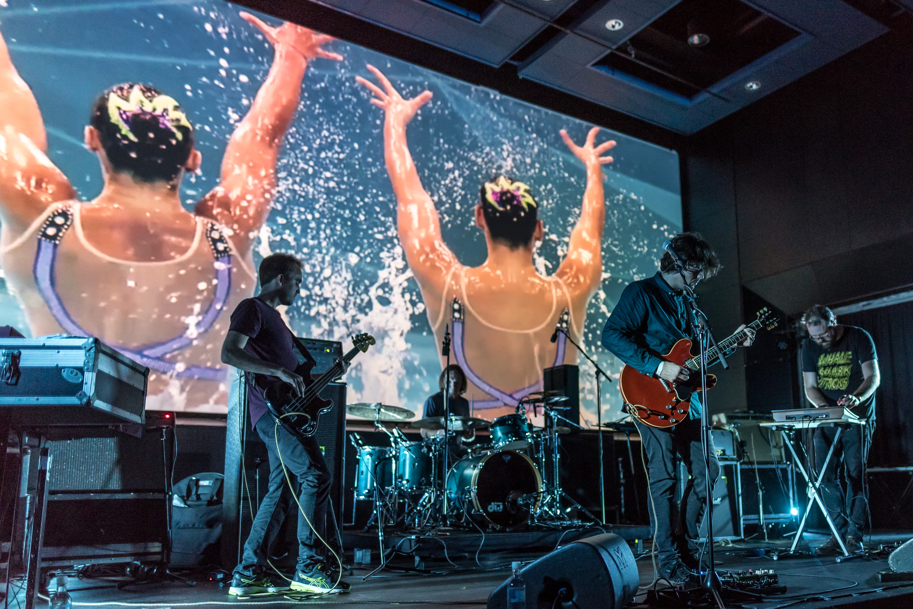
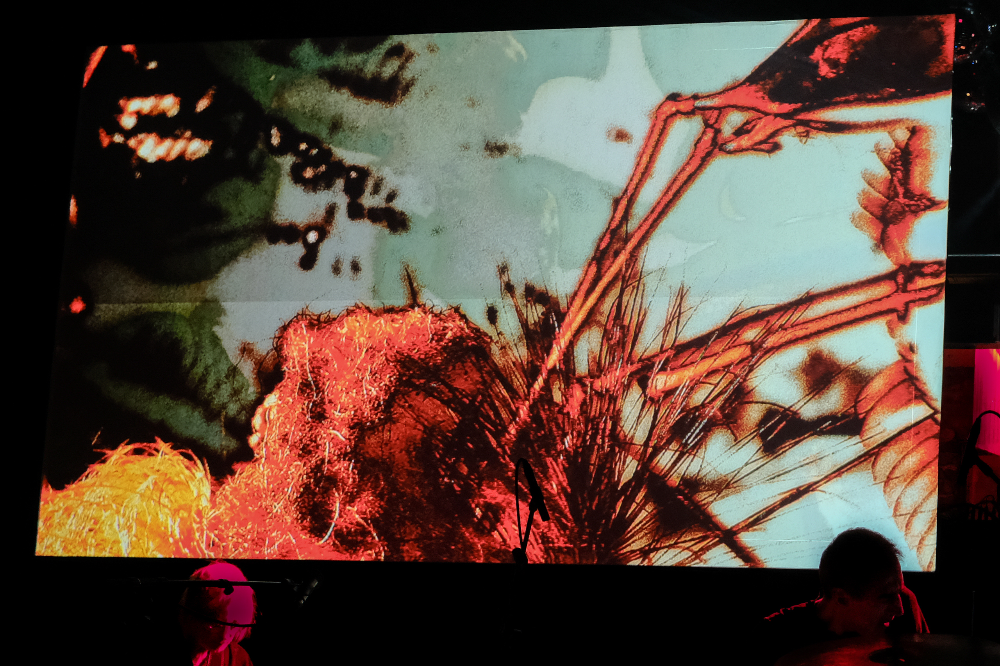

417.3 always use nature videos at their shows and only recently decided to collaborate with a VJ, who in real time creates video abstractions on screen. His name is Mikael Bayrikyan. He performed at Mujuice, Philip Gorbachev, Nikita Zabelin and many other shows, and also created videos for the project Fountain. In addition, Mikael plays audiovisual live under the nickname Synchronome (aka BSNVT) and has appeared at the techno festival Error_404 as well as at the international festival of electronic music Electro Mechanica.
At VIVID Mikael and 417.3 will present a video in which abstractions and nature will be combined.
In a time with increasing fusion of our reality and technology, Silje uses analogue and digital platforms to make abstract visuals that dance to the vibrations of sound. Her tools of trade are liquids, fabrics and cutting edge computing power.
Vilde Eskedal is a Norwegian artist from Kristiansand working in the visual and performative arts. Her practice is inspired by new materialistic philosophy and biology, as she explores the interaction between the materials and the body. Organic qualities in inorganic materials is a re-occurring theme in her work, explored through different mediums. Vilde's synaesthesia is a constant source of inspiration, a condition where one experiences several senses at once. This means that she experiences music and sounds as a translucent layer of colour and floating shapes on top of reality. Through performances using chemicals and paint, she visualizes her synesthetic experience of music as she hears it, resulting in colourful, abstract paintings.
Nordic Giants owe a debt of gratitude to the fantastically talented creative talents behind the short films that feature in their performances. Those talents include: Big Lazy Robot, Alessandro Bavari, Pencilhead, David Field, Mark Lapwood, Douglas Purver, JP Frenay, Alex Gee & Pujesh Joshi, Mischa Rozema, Bram Ttwheam and David Jackson. To find out more head over to www.nordicgiants.co.uk/shorts.
Monograf's visuals are made by Monograf founder Erik N. S. Aanonsen and Leonovís Ole Jørgen Reindal. The message and aesthetics of Monograf has always been tightly linked, and the visuals will give a deeper understanding of Monografís message. The visuals rely mostly on old archive footage, reveling in the lo-fi glory of photographic film.
Francesca is an Italian-based Videomaker, VJ and New Media Visual Artist who works especially with independent music projects for which she designs for live performance. Francesca is no stranger to VIVID, having expertly balanced the ferocity of Russian Black-gaze legends Show Me A Dinosaur back in 2017.Though her work often defies catergorisation, as she rarely works within the same genre, her visuals are often emotive and conjur something deeper from audiences. You can find more from Francesca by checking out her solo project Purple Moon Oneironauts, which explores live visuals in an improvisational setting.
Jakob Berglund has art directed all of A Swarm of the Sun's albums, as well as produced video, photography and design. So it should come as no surprise that the band keeps this tight creative control when they bring their vision to the stage. Jakob seeks to create abstract and intense imagery - where uncanny and raw emotion is hidden in the cracks of stillness.
VIVID, A Swarm of the Sun is teaming up with graphical designer and VJ Peter Wallentin, who will mix and manipulate Jakobís visuals throughout the set. He is currently based in Stockholm, but has a been an active VJ in the Malmö club scene.
The Kristiansand born, Oslo based artist Ingrid Kristensen Bjørnaali is currently doing her Masters in Fine Art studies at the Oslo National Academy of the Arts. Her artistic practice mainly revolves around notions of temporality and articulated time, in a thought meeting point between analog and digital, whether this is a natural state of being or a forced fusion between the two. As a VJ, she focuses on repetition and synchronicity, with a merging mix of self recorded video clips, bits and pieces from the vast internet and non-video based animations and effects.
Ingrid is no stranger to VIVID, having previously blown audiences away with her collaborations with The Samuel Jackson Five and Year Of No Light. We are eagerly anticipating what she will show for the 5th edition of VIVID.
Jonas Magnussen has been making visuals for concerts and installations since 2015. By programming his own visuals within Max/MSP and using a projector as his main tool, his style emphasizes being truthful to the musical expression at hand. He gives a different perspective to the music and is continuously experimenting with different visual palettes. Being recognized both locally and abroad after evolving his craft and performing with acts like Nils Petter Molvær, Elephant9 and Eple Trio over the last few years. We look forward to experiencing his new immersive project HertZling with Audun Kleive, and a video installation with Jon Lunde.